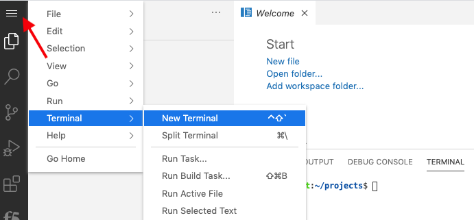
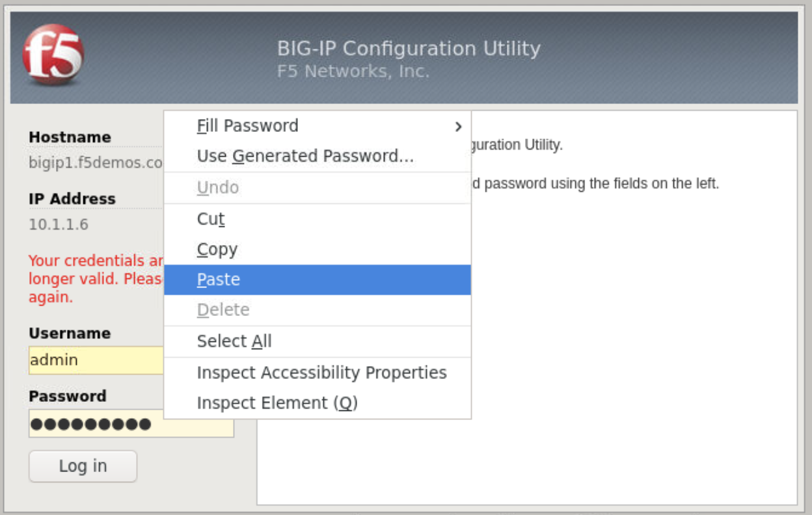

F5 and Hashicorp Basics > F5 Automation With Terraform Source |
Lab 1 - Basic BIG-IP Administration with Terraform¶
You will walk through a typical device onboarding workflow to deploy base network and app services configurations
Important
- Estimated completion time: 30 minutes
Access Lab Environment¶
Log in to F5’s [Unified Demo Framework Portal]
- Select F5 or Non F5 User then enter credentials.
Launch the Channel - F5 and Terraform Basics course
Click Join course, then click Deployment to access your lab envirnment.
Click the ACCESS dropdown on the client ubuntu server, then click VS CODE. We will use this for making edits to the terraform files
Open a New Terminal in VS Code to run commands in this lab
Update Terraform in VS Code to version 13.x
- run
terraform -versionin VS Code terminal on bottom of window - if terraform version is v0.13.2 then skip to step 7 else continue with upgrade process
wget --quiet --continue --show-progress https://releases.hashicorp.com/terraform/0.13.2/terraform_0.13.2_linux_amd64.zipsudo unzip terraform_0.13.2_linux_amd64.zipsudo mv terraform /usr/local/binterraform -versionto confirm v0.13.2rm terraform_0.13.2_linux_amd64.zip

- run
Under components, click the access dropdown on the client ubuntu server, then click Firefox
Login to BIG-IP management interface (https://10.1.1.6) admin : F5d3vops
Note
Ctrl+c and Ctrl+v does not work with the firefox web instance. You must paste into firefox cliboard and submit, then rtclk paste to paste as shown in the images below
{kind=link}
{kind=link}
{kind=link}
{kind=link}
{kind=link}
{kind=link}
{kind=link}
{kind=link}
{kind=link}